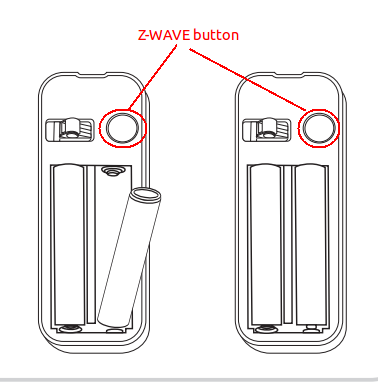

Aeon Labs Door/Window Sensor¶

Brief information¶
- The Aeon Labs D/W Sensor is a battery-powered Z-Wave magnetic door/window sensor with an extremely small form factor. The D/W sensor will send radio signals up to 6 associated Z-Wave devices within its own Z-Wave network when the main unit separates from the smaller unit.
- Bidirectional mounting plate and push button allows for easy end-user installation. The Aeon Labs D/W Sensor also has tamper prevention capabilities and low-battery alerts.
- 1 year battery life 2xAAA battery
- Up to 100 feets/30 metres indoor and 254 feeds/100 metres outdoor
How to add to VENUS app¶

- 1. Activation
- Press “Add button” (button ‘+’) in app
- Remove the plastic pull-tab from the back of device
- Wait for VENUS scan & detect this device and inform in app
- 2. Reset then re-add
- Press “Add button” (button ‘+’) in app
- Pressing z-wave button once to reset
- Pressing z-wave button once again to add
- Wait for VENUS scan & detect this device and inform in app
Wake up information¶
D/W sensor will keep wake up for 8 seconds after it send wake up notification command.
If it receive a command,it will keep wake up for 8 seconds to wait next command.
Press tamper switch 3 times, then D/W sensor will wake 10 minutes.
If configured, d/w sensor will wake 10 minutes too when power on.
- Only 3 ways can abort this status:
- Pressing tamper switch 3 times, sleep right now;
- D/W sensor received “Wake up no more information CC”, sleep right now;
- Received other command, wake 8 seconds to wait next command.
LED indicator¶
- ON: In network
- OFF: Sleeping
- Blink: Out of network
How to add/remove associated device(s) to¶
To add associated device(s) to this sensor, below action is required:
- Add z-wave notified-devices (which will be associated to this sensor) to VENUS
- Select Associate button and then select notified-device(s) to add
- Wake-up this sensor: 1 time press z-wave button
- If successful, pop-up notification displays in VENUS app
To remove associated device(s) from this sensor, below action is required:
- Select Associate button and then select notified-device(s) to remove
- Wake-up this sensor: 1 time press z-wave button
- If successful, pop-up notification displays in VENUS app
Configuration description¶
1. Signal trigger device (Trigger to associated devices)
Available setting 0 - When the door/window OPENNED, the associated devices are triggered as ON.
And when the door/window is CLOSED, the associated devices are triggered as OFF.1 - When the door/window OPENED, the associated devices are triggered as OFF.
And when the door/window is CLOSED, the associated devices are triggered as ON.Default 0 2. Signal trigger controller (Trigger to controller - zwave controller embedded in VENUS firmware)
Available setting 0 - When the door/window is OPENNED, the controller is triggered as OPEN.
And when the door/window is CLOSED, the controller is triggered as CLOSE.1 - When the door/window is OPENNED, the controller is triggered as CLOSE.
And when the door/window is CLOSED, the controller is triggered as OPEN.Default 0 3. Report to (Select target to receive trigger events)
This setting is used to select target report when this device detect action.
Available setting Device & Controller with Battery Information
Device & Controller
Device
Controller
Controller with Battery Information
Battery Information
Default Device & Controller with Battery Information
Device & Controller with Battery Information:
Associated devices, controller are assigned to receive events from device.
Battery information will be added to package send to controller in-order to inform current device’s battery level.
Device & Controller:
Associated devices, controller are assigned to receive events from device.
Device:
Only associated devices are assigned to receive events from device.
Controller:
Only controller is assigned to receive events from device.
Controller with Battery Information:
Only controller is assigned to receive events from device.
Battery information will be added to package send to controller in-order to inform current device’s battery level.
Battery Information:
Only battery information is sent to controller.
Factory reset¶
To reset this device to factory setting, press and hold z-wave button in 20 seconds. LED will blink in 3 seconds to let user know the reset successful.
Technical specification¶
Configuration SET command format
B: byte, b: bit, command_class: COMMAND_CLASS_CONFIGURATION, command: CONFIGURATION_SET
command class command parameter number default(1) - reserve(4) - size(3) config val 1 config val 2 ... config val n
- Parameter 1 - 1 byte: Toggle Sensor binary report value when Magnet switch open/close
- 0x00: Open:FF,Close:00 (Default)
- 0x01: Open:00,Close:FF
- Parameter 2 - 1 byte: Enable wake up 10 minutes when power on
- 0x00: Disable (Default)
- 0x01: Enable
- Parameter 3 - 1 byte: Toggle Basic set value when Magnet switch open/close
- 0x00: Open:FF,Close:00 (Default)
- 0x01: Open:00,Close:FF
Parameter 121 - 4 byte: Flag values for which reports to send when the D/W Sensor is triggered
Default: 0x00000100
reserve reserve reserve(7) - Basic set(1) reserve(3) - Binary report(1) - reserve(3) - Battery(1)
- Basic set (1b): 0 - don’t send basic set; 1 - send basic set
- Binary report (1b): 0 - don’t send binary report; 1 - send binary report
- Battery (1b): 0 - don’t send battery info; 1 - send battery info
Configuration GET command format
B: byte, b: bit, command_class: COMMAND_CLASS_CONFIGURATION, command: CONFIGURATION_SET
command class command Parameter number Configuration REPORT command format
B: byte, b: bit, command_class: COMMAND_CLASS_CONFIGURATION, command: CONFIGURATION_SET
command class command Parameter number Reserve(5) - Size(3)